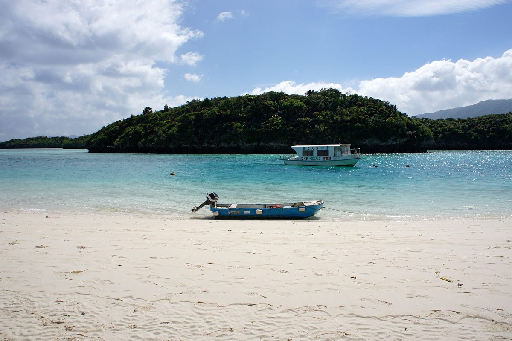

八重山的玄關。島本身就值得待，但它真正的角色是「基地」——把行李放在石垣，從離島碼頭出發，竹富、小濱、西表就在 15 分到 1 小時的船程裡。
船班受風浪影響大，尤其往西表的航線——出發前看一眼運航狀況，是八重山的基本動作。
行李放飯店，輕裝跳島，傍晚回石垣吃飯——這是最省力的走法。每天換住宿的跳島，行李會讓你後悔。
天氣說變就變，把行程綁死在套票上不划算。一段一段買，跳島的自由才留得住。
同一個川平灣，滿潮和乾潮是兩種顏色。出發前查一下潮汐表，照片會差很多——這是在地攝影的人都知道的小事。
船開不開、跳島怎麼排——之後可以直接敲我們（SNS 準備中）。先看看我們想做的事。